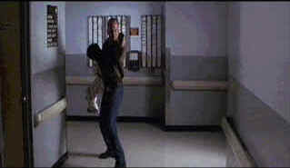

Universal/1998/144m/ANA,WS 2.35
 |
Willis with boy and gun in hand. ©Universal |
Willis is Art
Jeffries, an FBI undercover specialist who becomes too emotionally involved with the
perpetrators he has infiltrated. In an early morning hostage shoot-out, Jeffries loses his
cool over the manner in which his FBI colleagues dispose of the cult members holding
hostages in a bank. The result is a demotion to telephone surveillance duty. Meanwhile, a
young autistic boy inadvertently deciphers a secret cryptographic code in a puzzle book.
Colonel Kudrow(Baldwin)orders his heavies to dispose of the boy and his family. The
assassin can’t find the boy before the police arrive to answer a 911 call from the
dying father. Since Jeffries is close by, the FBI sends him to investigate. He finds the
boy hiding in a hidden cubby and takes him to the hospital. Before you can say Alec
Baldwin, the heavy is dispatched to the hospital to finish off the boy. Jeffries comes to
the rescue, grabbing the boy from the hospital. Everybody’s after Jeffries and the
boy. I can promise you this: before Mercury Rising ends, Jeffries gets to have two
confrontations with Kudrow, some good wine is wasted, and the boy says "Art is a
friend."
Harold Becker directs by the numbers(pun intended). Mercury
Rising is given a slick visual treatment and Becker keeps the action moving efficiently.
A very fine anamorphic transfer enhances the Mercury Rising
experience. The many night scenes have sparkle and snap. Deep blacks and vital colors are
consistent throughout the production. Detail is sharp, perhaps slightly over-enhanced. The
Dolby Digital 5:1 surround sound is very active with fine directionality and controlled
pans.
 ã1998
Stuart J. Kobak , all rights reserved.
ã1998
Stuart J. Kobak , all rights reserved.